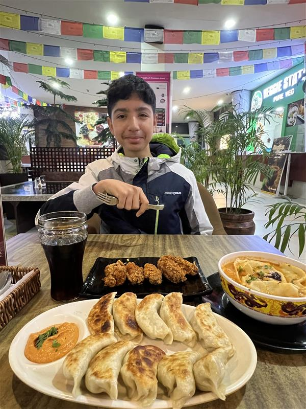
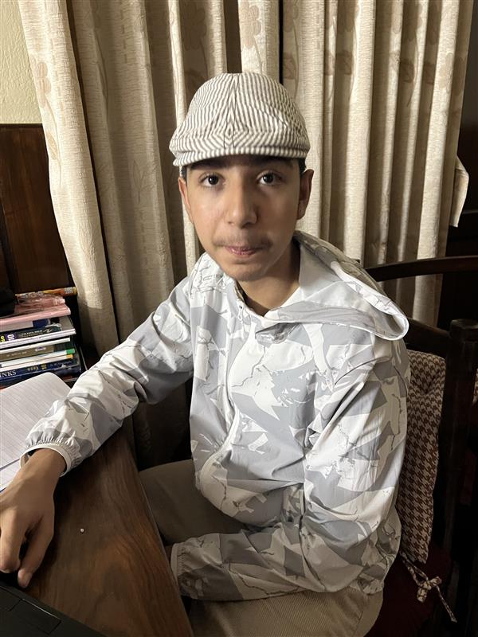
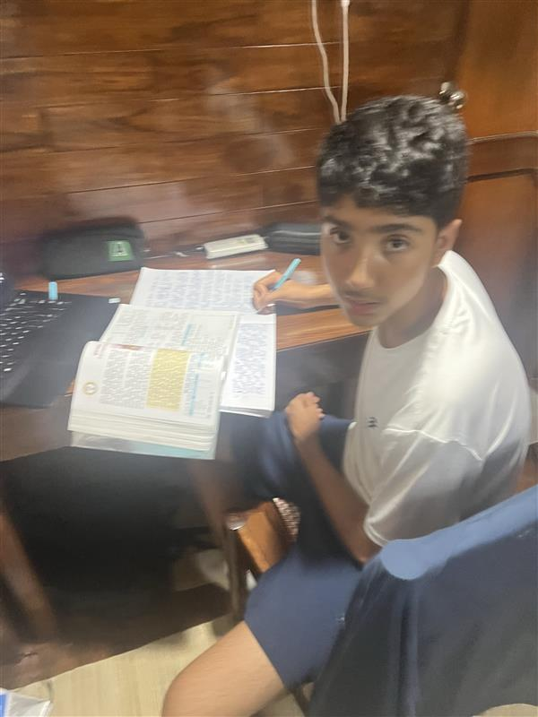
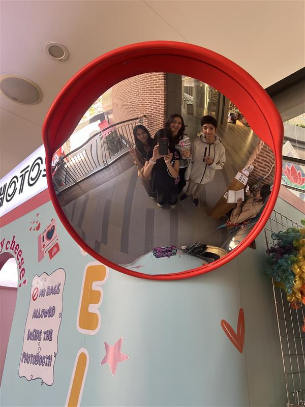
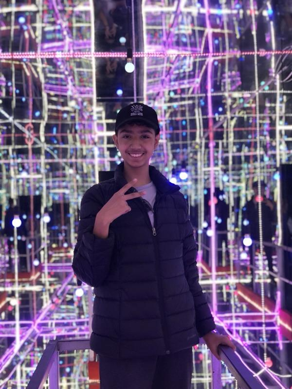
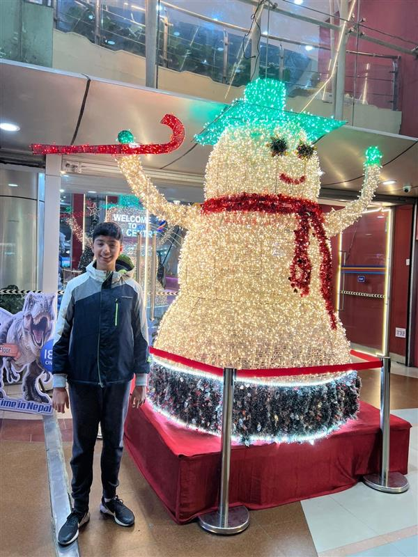

Contact Me:
If you want to know more about me you can use the QR code below:
If you have any inquiries, please contact:
9851082129
9846731089
Hello! Welcome to my portfolio website. My name is Akarshan Pandey and I live in Dillibazar and I am 15 years old. My father's name is Sandip Prasad Pandey and my mother's name is Akriti Pandey (Mishra). I have four family members in total. The Pandey family tree has been located in Kathmandu valley for many-many generations.
If you are wondering how I look, I have dark brown eyes, I am 5 feet and 7 inches, I have incredibly long eyelashes, and I have a medium brown skin tone. Now let me tell you about my personality! I am a person who tries to be proactive, engaging and occasionally tries to be funny and humorous.
I am also surrounded by people (Names: Kesika, Omisha, Ayana and Avana) who are very motivational. This has helped me become a better version of myself. I really appreciate their help in my improvement.
I am a student of Nisarga Batika School (NBS) from grade 1 till 10. I study in grade 10, so this year it is my batch's SEE. There are a total of 19 people, 10 female and 9 male students in my section "B".
I have multiple hobbies that include Art, Karate, and Driving. This is followed by many of my interests like Math, Biology and others. I have done Art for 8-9 years, and I am specialized in the field of Oil painting. I have done Karate class for 7 years and I am currently in Purple belt stage, which is the third-last belt before black belt. I know a total of 7 "Katas", the last one being "Basai dai". The last of my hobbies, driving, is quite recent, which I learned a year ago. It is fun and engaging except for the small heart attack I get if I see a fork in the way. On the other hand, my interests include Math and Biology, which help me sharpen my brain.
Out of all the sports I like football the most. It was my childhood favorite. When I was young I used to play football with my Dai. I do hav some Medals and certifications like medals of school swimming, football and basketball and a certifiate of teamwork in an Steam. This is all about me!
Some pictures of me!






| Year | First Mid Semester | Last semester |
|---|---|---|
| 2025(Grade 9) | Low | Good |
| 2026(Grade 10) | Good | In session |
If you want to know more about me you can use the QR code below:
If you have any inquiries, please contact:
9851082129
9846731089